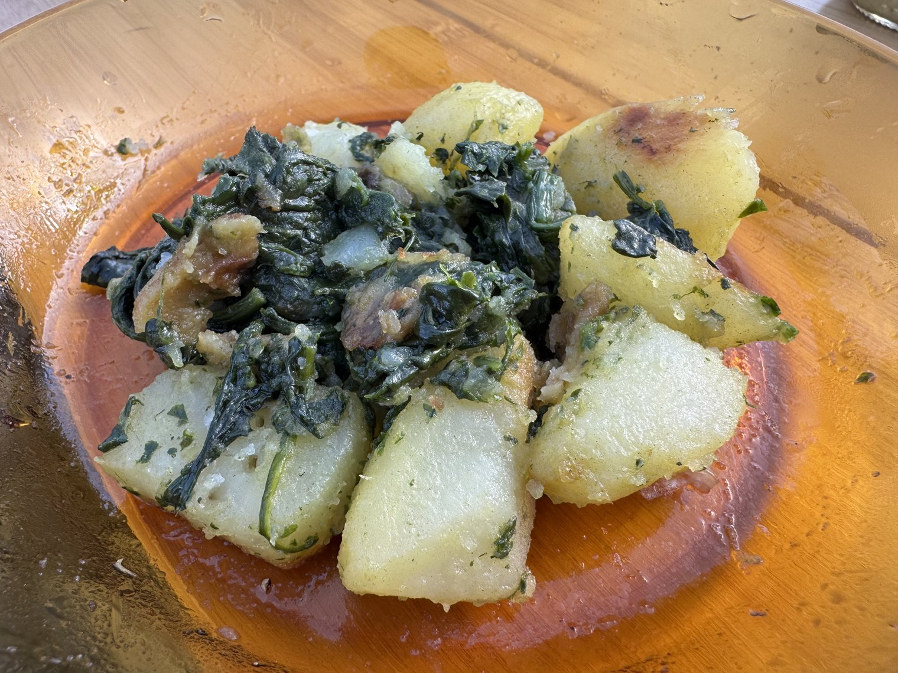

Patatas con espinacas
Ingredientes
2×
- 500 g de patatas
- 300 g de espinacas
- aceite de oliva

Preparación
Paso 1
Cocer 500 g de patatas en trozos en agua con sal unos 20min y escurrir.
Paso 2
Saltear 300 g de espinacas en una sartén con aceite de oliva hasta que se reduzcan.
Paso 3
Mezclar con las patatas, y sofreir todo junto con buen aceite. salpimentar.
Resumen
500 g de patatas
Cocer
300 g de espinacas
aceite de oliva
Saltear
Mezclar sofreir